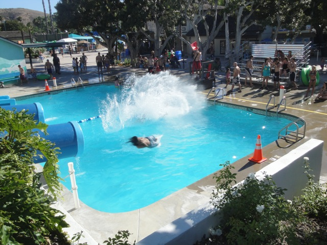
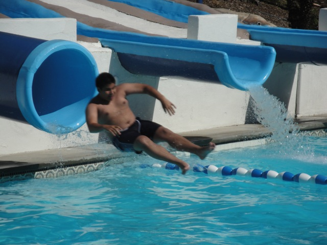
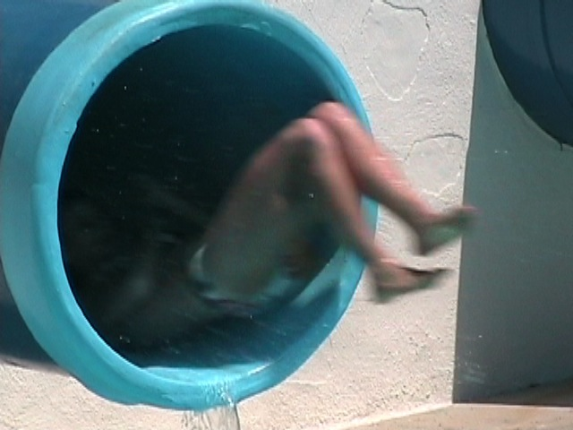
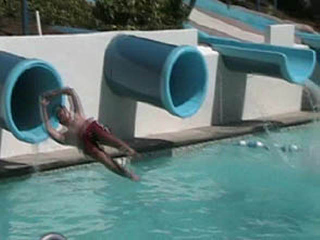
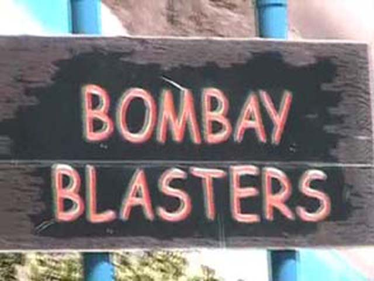

| |

Bombay Blasters Review

For this review, we're going to travel back in time to 2011, which was my last visit to Wild Rivers. For this Wild Rivers Review, we'll be reveiwing Bombay Blasters. Bombay Blasters was probably the most unique slide at Wild Rivers for many reasons. For one thing, it went underground, and just its very nature was very strange and fucked up. But anyways. After getting in line, you wait at the top of the slide, waiting for the go. Now when you're just sitting up there , it does NOT seem like you're going to go fast due to the fact that the rubber is creating a lot of friction. Once you are clear, you have to push yourself down the slide to make yourself go. At this point, you're just thinking to yourself. This stupid slide is slow and boring. But right as you say that, you gain a shitload of speed. It almost feels like you just hit a launch. But before you can debate whether that was a launch or not, you are FLYING through the air. For a split second, you think that you are going to fly onto the concrete and flop around like a fish (Hell, that almost happened to Cody!). But then you just splash down into the water. Your mind is boggled at the amazingness that you just experienced. This slide was fucking awesome! Luckily, they sort of recreated it at New Wild Rivers. Is it as good?
9/10
Location: Wild Rivers
Opened: I honestly don't know
Died: September 25, 2011
Built by: I honestly don't know.
Last Ridden: July 18, 2011
Bombay Blasters Photos













Home
|